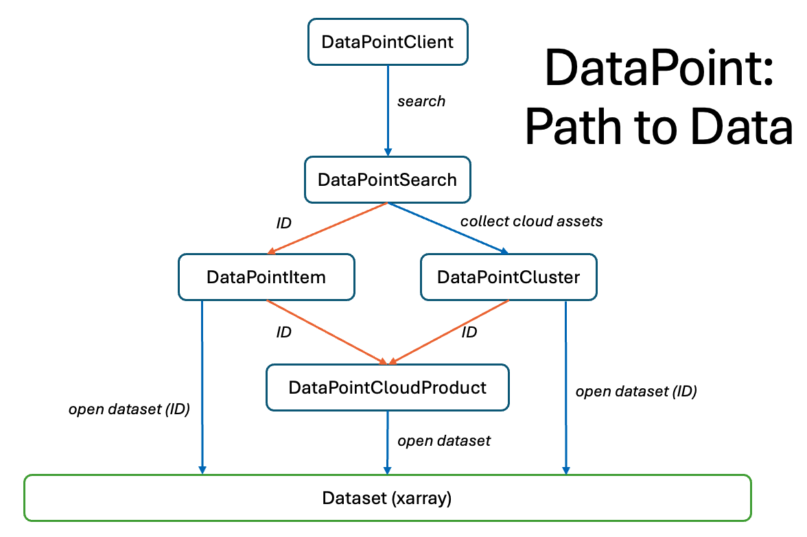

DataPoint Objects
This diagram showcases the different objects that form part of the DataPoint search structure, and how to move between them.
All DataPoint accesses start with a client object connected to an API endpoint/url. Currently DataPoint only knows about the CEDA endpoint
by default, but others can be provided via the url kwarg to the client. The client has several methods to inform the user about search options.
When a search is performed, the user receives a DataPointSearch object which encapsulates the results of the search and provides additional methods
to access the metadata and present these in a meaningful way. From there the datasets described by the search can be collected into a DataPointCluster or a single item
can be selected from the search if the user would like to specifically look at one item.
In either case, the Item or Cluster object can be indexed numerically or by ID to obtain a DataPointCloudProduct which represents a single Dataset object. The dataset
has still not yet been loaded; the user is able to check the metadata of the cloud product to ensure they have the correct dataset, before simply using the open_dataset method
to obtain an Xarray Dataset object. From there, the standard Xarray tools and methods apply for data manipulation, which you can find on the Xarray website.
Alternatively a user can skip accessing data via the cloud product by using open_dataset from the Item or Cluster, providing the ID here. It is even possible to open a dataset
directly from the search item, if the ID of the cloud asset is known. Since a single item may contain multiple cloud assets, it is the cloud asset ID that must be provided
in order to open the correct dataset.